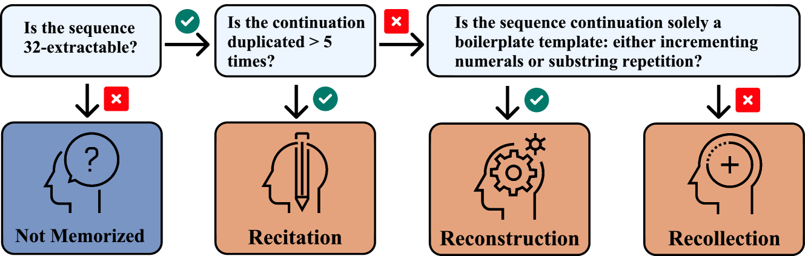

Current Work
I'm an AI Safety Research Fellow with ERA Cambridge, where I'm studying pretraining and midtraining safety interventions for addressing dangerous capabilities (e.g., biorisk and offensive cyber). I was previously at EleutherAI. I was an applied scientist and software engineer at Microsoft before pivoting into AI research.
I'm actively seeking research opportunities starting in Fall 2025.
For details on my past work and experience, please see my resume.
Research Direction
My north star is to help make AGI go well for humanity. There are many ways it may not. I don't study them all. My research focuses on developing solutions to the technical and governance challenges. I focus on LLMs because I believe they will lead to AGI and beyond.
My current primary research direction is Capability Prevention & Removal (CPR). This multi-paper direction aims to build scalable techniques for removing unwanted capabilities from models before deployment. Crucially, it shouldn't be easy for downstream users to fine-tune models on these capabilities. For instance, we want to be able to prevent models from learning biorisk capabilities in the first place and develop unlearning algorithms to remove any remaining biorisk knowledge from the weights of a fully-trained model. The ability for model providers to control which capabilities their models have would be a significant breakthrough for AI safety. However, this direction may not scale to ASI, and it is best complemented, and hopefully replaced, by breakthroughs in foundational AI alignment.
We recently released our first paper in this direction — Deep Ignorance: Filtering Pretraining Data Builds Tamper-Resistant Safeguards into Open-Weight LLMs. We find that we can prevent LLMs from learning about biorisk by filtering pretraining data, and that this is an especially promising intervention for open-weight models. This work has been covered for a general audience by the Washington Post and Fortune.
My secondary interests focus on empirically studying self-fulfilling misalignment, safety evaluation data contamination, training open-weight models, and technical AI governance.
Selected Publications
Deep Ignorance: Filtering Pretraining Data Builds Tamper-Resistant Safeguards into Open-Weight LLMs
arXiv preprint, 2025
We investigate whether filtering dual-use topics from training data can serve as a tamper-resistant safeguard for open-weight LLMs. Our multi-stage data filtering pipeline demonstrates substantial resistance to adversarial fine-tuning on up to 10,000 steps and 300M tokens of biothreat-related text, outperforming existing post-training baselines by over an order of magnitude, with no degradation to unrelated capabilities.
Steering Language Model Refusal with Sparse Autoencoders
ICML 2025 Workshop on Actionable Interpretability

We explore steering model activations at inference time via amplifying sparse autoencoder (SAE) features that mediate refusal. While feature steering successfully improves robustness against jailbreak attempts, we discover a fundamental tension between SAE steering-based safety improvements and general model capabilities, with systematic degradation of performance across benchmark tasks.
Composable Interventions for Language Models
International Conference on Learning Representations (ICLR), 2024

We introduce composable interventions, a framework to study the effects of using multiple interventions on the same language models. Using our framework, we conduct extensive experiments composing popular methods from Knowledge Editing, Model Compression, and Machine Unlearning, revealing complex interaction patterns when interventions are applied sequentially.
Recite, Reconstruct, Recollect: Memorization in LMs as a Multifaceted Phenomenon
International Conference on Learning Representations (ICLR), 2024
We model memorization as a multifaceted phenomenon, introducing a taxonomy that breaks it into recitation (of highly duplicated sequences), reconstruction (of inherently predictable sequences), and recollection (of sequences that are neither). We demonstrate the taxonomy's usefulness by constructing a predictive model showing different factors influence memorization likelihood across categories.
Improving Black-box Robustness with In-Context Rewriting
Transactions on Machine Learning Research (TMLR), 2024
We propose LLM-TTA, which uses LLM-generated augmentations for test-time augmentation to improve model robustness on out-of-distribution inputs. Our In-Context Rewriting method rewrites inputs to match in-distribution exemplars, outperforming conventional augmentation functions for BERT and T5 across sentiment, toxicity, and news classification tasks.
Pythia: A Suite for Analyzing Large Language Models Across Training and Scaling
International Conference on Machine Learning (ICML), 2023
We introduce Pythia, a suite of 16 LLMs ranging from 70M to 12B parameters, all trained on public data in the exact same order. We provide 154 checkpoints per model alongside tools to reconstruct training dataloaders, facilitating research in memorization, few-shot performance, and bias reduction through this highly controlled setup.
Get in Touch
I'm generally happy to meet people interested in my research, potential collaborations, or AI safety career advice.
Email: kyledevinobrien1@gmail.com